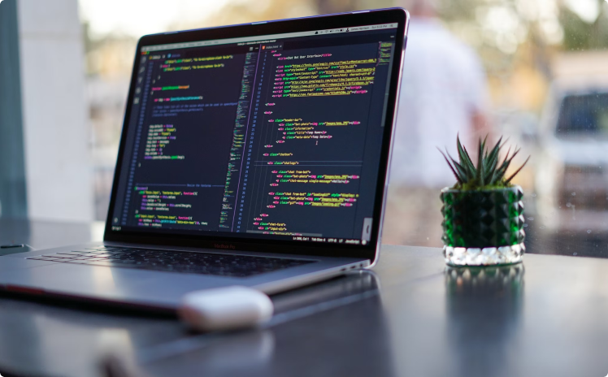

Blog two
Today on Scrimba I tackled mobile-first responsive design with CSS Grid and Flexbox. Watching a single-column mobile layout smoothly adapt to desktop screens finally clicked for me.
Stepping into the backend side of the Scrimba Fullstack Path with Node.js and Express. Creating my first custom server routes and connecting frontend to backend was super exciting.

The best part of learning Node.js after frontend JavaScript is using the same language on the server. Setting up an Express server, handling GET and POST requests, and serving JSON data made the mystery of how APIs work disappear.
Seeing my frontend fetch data from an endpoint that I built myself was an unforgettable moment. Next up: persisting data in a database and deploying fullstack apps!
Today on Scrimba I tackled mobile-first responsive design with CSS Grid and Flexbox. Watching a single-column mobile layout smoothly adapt to desktop screens finally clicked for me.
Working with asynchronous JavaScript and REST APIs in the Scrimba Fullstack course. Fetching live data and handling promises opened up a whole new world of dynamic web apps.
Solo Project time on Scrimba! Putting everything together—from responsive CSS Grid to clean JavaScript modules—without hints has been the best way to test my fullstack skills.